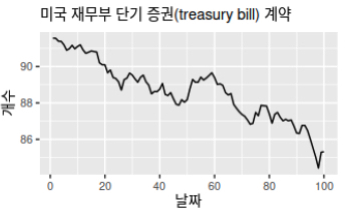
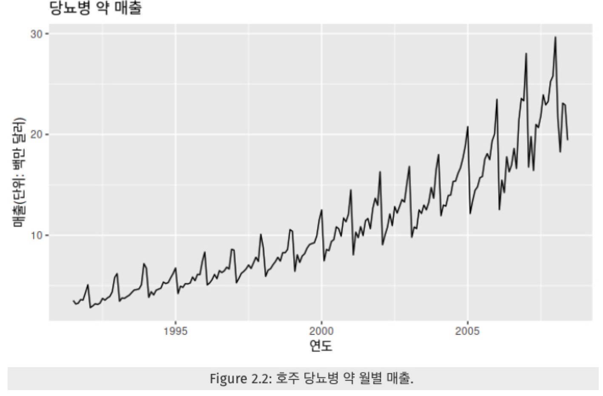
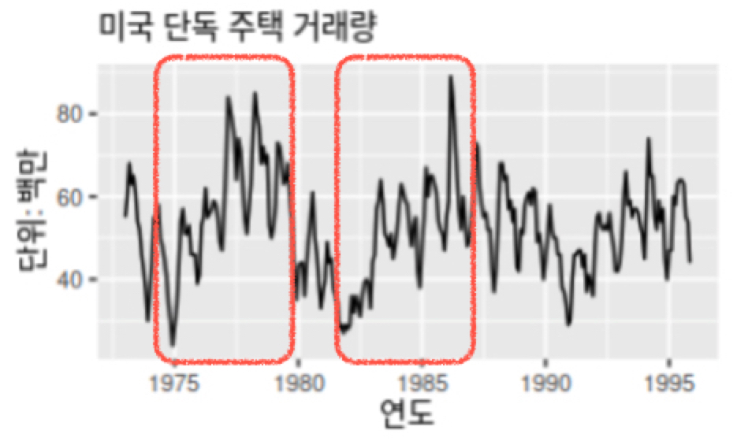
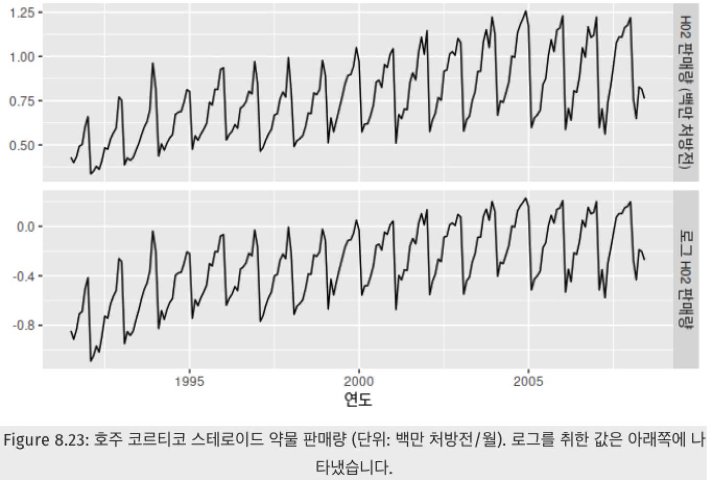
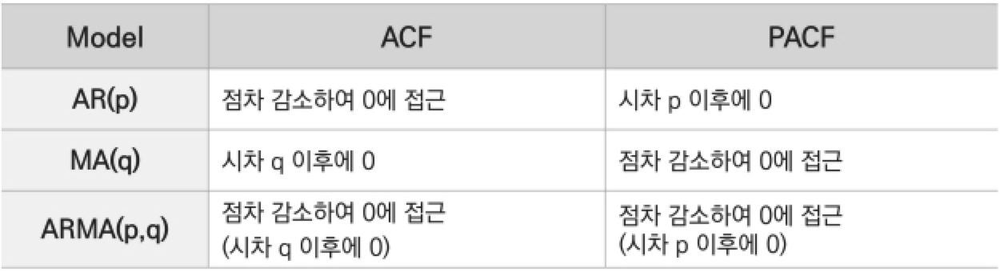
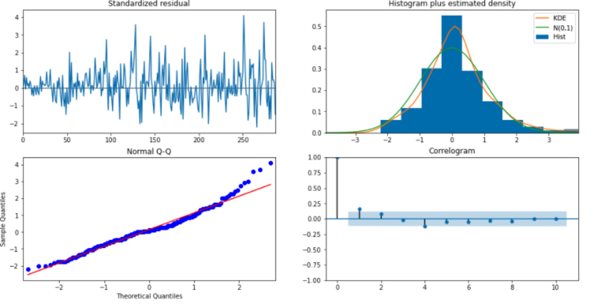

시계열 분석 시리즈 (3): auto_arima를 잘 쓰기 위한 배경 지식
auto_arima를 사용해도 모형이 잘 적합이 안 되신다구요?auto_arima가 아무리 자동화된 알고리즘이라고 하지만 사람의 손을 꽤 타는 친구입니다. 왜 안 되는지, 어떻게 모형을 개선할지에 대해 아려면 이에 관련한 배경 지식이 필요합니다.- 따라서, 이번 포스팅에서는 Python의
auto_arima함수의 원리인 힌드만-칸다카르 알고리즘에 대해 설명하고,auto_arima를 쓰기 전 해야 할 일 (시각화)과 쓴 후 해야 할 일 (잔차 검정)에 대해 정리하였습니다. - 역시 실전 시계열 분석: 통계와 머신러닝을 활용한 예측 기법 책과 Forecasting: Principles and Practice책을 기반으로 글을 작성하였습니다. 또한
pmdarima공식페이지도 참조하였습니다. - ARIMA 의 이해가 부족하시다면 이전 포스트인 시계열 분석 시리즈 (2): AR / MA / ARIMA 모형, 어디까지 파봤니?를 참고 바랍니다.
ARIMA 모형에서의 p, d, q 의 의미
이전 포스트에서도 소개했듯이 ARIMA (p,d,q)모형은 어떤 시계열을 d차 차분을 했을 때 AR (p) 모형과 MA (q) 모형이 합쳐진 ARMA (p,q) 모형을 따르는 형태입니다.
여기서
-
d차 차분은 아래와 같이 연이은 관측값의 차이를 번 한 것을 의미합니다. 를 1차 차분, 를 2차 차분이라 할 때 아래처럼 전개가 됩니다.
차분을 하는 목적은 차분한 시계열이 정상성 (stationarity)을 띠게 하여 시계열 예측을 가능케 하도록 함에 있습니다. (이 논의는 시계열 분석 시리즈 (1): 정상성 (Stationarity) 뽀개기에서 자세히 확인하실 수 있습니다)
-
AR (p)모형은 시계열 값이 과거 시점만큼 앞선 시점까지의 값에 의존할 때 쓰는 모형으로, 현 시점의 값을 자기 자신의 과거의 값들로 설명하는 회귀모형을 의미합니다.
-
MA (q)모형은 시계열 값이 과거 시점만큼 앞선 시점까지의 오차에 의존할 때 쓰는 모형으로, 현 시점의 값을 과거의 오차 값들로 설명하는 회귀모형을 의비합니다. 오차는 “예측하기 어려운 shock”shock이란 갑자기 값이 평균에서 크게 벗어날 때 사용하는 시계열 용어로 해석이 가능하여, MA (q)는 과거의 shock이 현재 값에 영향을 줄 때 사용하는 모형입니다.
결국 ARIMA (p,d,q)는 이렇게 모형을 정의할 수 있습니다.
여기서 는 차분을 구한 시계열입니다. (한 번 이상 차분을 구한 것일 수 있습니다) 또한 식을 자세히 보면 차까지 AR처럼 과거의 값들이 들어가있고, 차까지 MA처럼 가 전개되어있습니다. 따라서, 모수 는 다음과 같은 의미를 같습니다.
- : AR 부분의 차수
- : 차분의 정도
- : MA 부분의 차수
이를 후방 이동 연산자를 이용해서 식을 정리하면 다음과 같습니다.
예를 들어 차 차분이라면 아래와 같이 전개가 됩니다.
AIC: ARIMA 차수 선택과 모수 추정의 기준
자, 그럼 ARIMA 에는 p,d,q 라는 세 개의 차수가 존재하는 것까지 이해했습니다.
이제 이 p,d,q의 값을 적당히 잘 정해줘야하고,
이 각각에 대해 , 회귀계수의 값을 추정해주어야 합니다.
이를 위해 AIC (Akaike’s information Criterion)아카이케 정보 기준 를 이용할 수 있습니다.
AIC 외에도 BIC, HQIC, OOB 등 다양한 정보 기준이 있지만, Python에서 기본값이 되는 AIC에 대해 한정하여 설명하겠습니다.
ARIMA에서 쓰는 AIC를 설명하기 전에 더 쉬운 예인 선형 회귀 모형을 생각해봅시다.
를 예측하는데 필요한 변수 들을 골라야 하는 경우 AIC를 이용하여 AIC를 가장 작게 하는 변수 조합으로 모형을 정하는데요. 예를 들어, 몸무게를 예측하는데 헬스 횟수, 음주 빈도, 하루 식단 칼로리와 같은 변수들이 후보로 있다면, 이런 식으로 변수 조합을 바꿔가면서 모형들을 세워볼 수 있습니다.
- 몸무게 = a + b * 헬스 횟수 + c * 음주 빈도 + d * 하루 식단 칼로리
- 몸무게 = a + b * 헬스 횟수 + c * 음주 빈도
- 몸무게 = a + b * 헬스 횟수 + d * 하루 식단 칼로리
- 몸무게 = a + c * 음주 빈도 + d * 하루 식단 칼로리
이 각 모형들에 대해 AIC라는 값을 구하고 AIC를 최소화하는 모형을 최종 모형으로 택할 수 있습니다.
AIC는 아래와 같이 정의됩니다.
여기서 은 로그 가능도, 는 추정된 모수의 개수를 의미합니다. **가능도 (Likelihood)**는 위에서 후보 모형들로 모형을 세웠을 때, 실제 관측된 데이터가 그 모형을 따를 확률을 의미합니다. 따라서, 관측한 데이터가 모형을 잘 따르고 잘 적합될수록 가능도는 큰 값을 가집니다.
AIC의 식을 보면 이라는 항 때문에 모형이 잘 적합될수록 AIC 값은 작아지고, 라는 항 때문에 모형이 복잡할수록 AIC 값은 커집니다. 이 때 우리는 AIC를 최소화하는 모형을 고르는 것이기 때문에 가능도를 최대화하는 동시에 모형은 좀 간단한 모형을 고르게 됩니다. 여러 예측 변수들을 추가한 복잡한 모형이 간단한 모형보다 가능도가 높은 경향이 있는데, 복잡한 모형은 과적합하기 쉽습니다. 따라서 복잡한 모형을 지양하기 위해 불필요한 변수가 들어가면 AIC 값이 커지도록 페널티 를 부여하여 모델의 품질을 평가합니다.
이처럼 ARIMA (p,d,q)에서도 p, d, q를 바꿔가면서 , 회귀계수의 값을 추정하고, 각 모형에 대해 AIC를 계산할 수 있습니다. ARIMA 모델에 대해 AIC는 다음과 같이 쓸 수 있습니다.
여기서 는 ARIMA(p,d,q)모형의 상수항 여부에 따라 결정됩니다.
상수항 가 있으면 , 없으면 의 값을 갖습니다.
ARIMA 모형을 자세히 보면 AR(p)부분의 모수 p개, MA(q)부분의 모수 q개, 상수가 있을 경우 라는 모수 1개, 에 대한 모수 1개이기 때문에 총 개의 모수를 갖는 것을 확인하실 수 있습니다.
auto_arima 과정 전에 할 일: 시각화
이처럼 AIC와 같은 정보 기준을 사용하여 가장 시계열 값을 잘 설명할 수 있는 차수 p, d, q와 회귀 계수들을 추정할 수 있습니다.
파이썬의 pmdarima모듈의 auto_arima (내지는 R의 auto.arima 함수)는 자동으로 p, d, q를 바꿔가면서 계수를 추정하고, 각 모형별로 정보 기준을 계산하여 최적의 값을 내는 모형을 계산합니다.
그러나 auto_arima 만 너무 맹신하면 큰 코 다칠 수 있습니다.
auto_arima과정을 거치기 전에 시계열 자료를 시각화하는 과정,auto_arima과정을 거친 후에 모델 적합 후의 잔차가 백색잡음인지, 정상성을 만족하는지 확인하는 과정
이 두 가지가 필수적입니다.이 과정을 거쳐 문제가 없으면 예측을 할 수 있는 것입니다.
따라서 먼저 auto_arima 과정 전에 할 일인 "시각화"에 대해 알아보겠습니다.
시계열 자료를 시각화하는 것이 필요한 이유는 크게 두 가지입니다.
- 데이터 상 특이한 관측치가 있는지? 패턴은 어떠한지? 추세 (trend) / 계절성 (seasonality) / 주기성 (cycle) 이 눈으로 확인 가능한지? 에 대해 확인이 필요합니다. 만약 계절성이 있다면
auto_arima를 통해 적합시seasonal옵션으로 SARIMA (Seasonal ARIMA) 모형을 적합한다 명시해야할 수 있고, 주기가 있다면auto_arima에서m옵션으로 주기를 명시해주어야 모형 적합을 잘 할 수 있기 때문입니다. - 분산을 안정화해줄 필요가 있는지 파악해야합니다. 과거와 현재 시계열 자료의 분산이 다르다면 로그 변환 내지는 Box-Cox 변환을 고려해볼 수 있습니다.
어떤 시계열이 추세 / 계절성 / 주기성을 보일까요?
-
추세는 데이터가 장기적으로 증가하거나 감소할 때 추세가 존재한다 말합니다. 추세는 선형적일 필요는 없습니다.

-
계절성은 해마다 어떤 특정한 때나 1주일마다 특정 요일에 나타나는 것 같은 계절성 요인이 시계열에 영향을 줄 때 계절성 패턴이 나타납니다. 계절성은 빈도의 형태로 나타내는데, 그 빈도는 항상 일정하다 알려져 있습니다.

-
주기성은 고정된 빈도가 아닌 형태로 증가나 감소하는 모습을 보일 때 주기가 나타납니다. 아래처럼 빨간 박스 부분을 보면, 반복적으로 매 5년마다 비슷한 형태로 증가하는 모습을 보여 주기가 존재함을 알 수 있습니다.

어떤 시계열이 분산이 다를까요?

위 그림에서 위쪽 그림을 자세히 보면 과거에 데이터가 변동하는 정도보다 현재에 더 큰 크기로 변동함을 알 수 있습니다. 그렇기 때문에 데이터의 분산을 안정화해주기 위해 아래쪽 그림처럼 로그 변환을 하였고, 그 결과 분산이 과거와 현재 간의 분산의 크기가 비슷함을 확인하실 수 있습니다.
ACF, PACF 로도 가늠이 가능하다!
또한, ACF (Auto Correlation Function)나 PACF (Partial Autocorrelation Function) 그래프로도 ARIMA 차수를 가늠해볼 수 있습니다.
- ACF는 와 간의 상관 관계를
- PACF는 와 간의 상관 관계를 계산하되 의 영향은 배제한 채 구한 것을 의미합니다. ACF와 달리 와 간의 순수한 상관 관계를 보여준다는 점에서 차이가 있습니다.
그래서 AR에 해당하는 차수 p는 PACF를 이용하여 결정하고, MA에 해당하는 차수 q는 ACF를 이용하여 결정합니다.
ACF와 PACF를 통해 p와 q 차수를 가늠하는 방법은 다음과 같습니다.

주의할 점은 ACF나 PACF는 차분을 얼마나 할지에 대한 정보는 주지 않기 때문에 ARIMA(p,d,q)에서 d를 바꿔가면서 p와 q를 체크하는 것이 필요합니다.
그러나…개인적으로 ACF나 PACF에서는 확신하여 p와 q를 정하기 어려워서 결국 auto_arima의 값을 신뢰하게 되더라고요.
데이터가 어떠한 특성을 갖고 있는지 직관적으로 보여줄 수 있는 참고 자료로 좋지 않을까… 생각해봅니다.
힌드만-칸다카르 알고리즘: 자동화된 차수 선택 방법 (auto_arima) 의 원리
파이썬의 auto_arima (내지는 R의 auto.arima 함수)는 자동으로 p, d, q를 바꿔가면서 계수를 추정하고, 각 모형별로 정보 기준을 계산하여 최적의 값을 내는 모형을 계산합니다. 더 자세하게는 이 함수는 힌드만-칸다카르 (Hyndman-Khandakar) 알고리즘의 변형된 형태를 사용한다고 하는데요. auto_arima는 최적의 ARIMA 모형을 얻기 위해 단위근 검정 정상성을 파악하기 위한 검정, AICc 최소화AICc는 수정된 형태의 AIC, MLE를 결합하여 사용합니다.
힌드만-칸다카르 알고리즘은 이름은 어렵지만, 결국 회귀 분석에서 적절한 모형을 찾을 때처럼 stepwise하게 차수를 빠르게 찾는 최적화 방법이라 이해하시면 좋습니다.
구체적인 힌드만-칸다카르 알고리즘은 다음과 같습니다.
- 단위근 검정을 반복하여 차분 횟수 를 결정합니다.
- 데이터를 번 차분한 후 AICc를 최소화할 수 있는 와 를 고릅니다. 이 알고리즘에서는 와 의 모든 가능한 조합을 살펴보는 것이 아니라, 단계적 (stepwise) 탐색을 사용합니다.
- 4개의 초기 모델을 맞춥니다.
- ARIMA (0,d,0)
- ARIMA (2,d,2)
- ARIMA (1,d,0)
- ARIMA (0,d,1)
가 아니면 상수를 포함합니다.
- 1 단계에서 맞춘 초기 모델 4개 중 가장 좋은 모델을 "현재 모델"로 둡니다.
- 현재 모형의 변형을 고려합니다.
- 현재 모델에서 와 를 각각 로 바꿔봅니다.
- 상수 를 현재 모델에 포함시켜보거나 제외해봅니다.
- 현재 모델이나 변형된 모델 모두 고려하여 가장 좋은 모델이 새로운 현재 모델이 됩니다.
- 더 작은 AICc가 나오지 않을 때까지 3.을 반복합니다.
- 4개의 초기 모델을 맞춥니다.
위 알고리즘을 이해해보면 다음과 같습니다.
- 일단 ARIMA를 적합하려면 정상성을 띠어야하기 때문에 단위근 검정을 통해 알맞은 차분 횟수 를 구해야 합니다. 시계열에서 차분을 했을 때 단위근 검정을 통해 정상성을 띠면 그것이 알맞은 차수가 될 것입니다.
- 초기 모델을 보면 와 의 값이 0~2 사이로 그리 크지 않음을 알 수 있습니다. 시계열 적합시 보통 의 제약만으로도 충분히 시계열 자료를 설명할 수 있다 합니다.
- 초기 모델을 변형시켜가면서 더 나은 모델은 없는지 AICc라는 정보 기준을 통해 최적의 모형을 찾습니다.
auto_arima 후에 할 일: 잔차의 백색 잡음 여부 / 정규성 / 등분산성 확인
auto_arima의 summary 결과의 Ljung-Box (Q), Jarque-Bera (JB) 등의 검정 통계량을 통해 확인할 수 있고, 혹은 plot_diagnositics() 함수로 잔차를 시각화하여 확인할 수 있습니다.
ARIMA에서 모형이 잘 적합되었다, 이제 손 떠나도 된다의 기준은 무엇일까요?
바로 모형을 적합하고 남은 잔차 (residuals)가 시간과 무관하게 정상성을 띠면서 (즉, 일정한 평균과 분산을 갖고) 정규성을 만족해야한다는 것입니다.
즉, 아래와 같이 말이죠.
이를 위해 auto_arima 적합 후 모형에 대한 summary를 하면 잔차와 관련한 통계량들을 제공합니다.
아래는 실제 모형 적합 후 얻은 표입니다.
1 | SARIMAX Results |
이 중 잔차에 관련한 부분은 Ljung-Box (Q) / Heteroskedasticity (H) / Jarque-Bera (JB) 입니다.
그리고 Prob (Q) / Prob (H) / Prob (JB)는 각 검정에 대한 p-value입니다.
-
Ljung-Box (Q) 융-박스 검정 통계량는 잔차가 백색잡음인지 검정한 통계량입니다.
Ljung-Box (Q)에서 Prob (Q) 값을 보면 0.65이므로 유의수준 0.05에서 귀무가설을 기각하지 못합니다.
Ljung-Box (Q) 통계량의 귀무가설은 "잔차(residual)가 백색잡음(white noise) 시계열을 따른다"이므로, 결과를 통해 시계열 모형이 잘 적합되었고 남은 잔차는 더이상 자기상관을 가지지 않는 백색 잡음임을 확인할 수 있습니다. -
Heteroskedasticity (H) 이분산성 검정 통계량은 잔차가 이분산을 띠지 않는지 검정한 통계량입니다.
위 Heteroskedasticity (H)에서 Prob (H) 부분을 보면, 0.06으로 귀무가설을 기각하지 못합니다.
Heteroskedasticity (H) 통계량의 귀무가설은 "잔차가 이분산을 띠지 않는다"이므로, 위 결과를 통해 "잔차가 이분산성을 보이지 않음"을 확인하실 수 있습니다. -
Jarque-Bera (JB) 자크-베라 검정 통계량은 잔차가 정규성을 띠는지 검정한 통계량입니다.
위 Jarque-Bera (JB)에서 Prob(JB)값을 보면 0.00으로 유의 수준 0.05에서 귀무가설을 기각합니다.
Jarque-Bera (JB) 통계량의 귀무가설은 "잔차가 정규성을 만족한다"이므로, 위 결과를 통해 "잔차가 정규성을 따르지 않음"을 확인할 수 있습니다. -
또한, 잔차가 정규분포를 따른다면 경험적으로 비대칭도 (Skew)는 0에 가까워야 하고 첨도 (Kurtosis)는 3에 가까워야 합니다.
위 Summary 결과를 통해 비대칭도는 0.53으로 0에 가깝지만 첨도는 4.67로 3보다 더 높은 값을 가지고 있음을 알 수 있습니다.
이를 아래와 같이 plot_diagnostics()를 통해 얻은 잔차 그래프로도 확인하실 수 있습니다.

잔차가 백색 잡음을 따르는지 보여주는 플랏은 (1,1)과 (2,2)에 위치한 그림입니다. (1,1)은 잔차를 그냥 시계열로 그린 것이고, (2,2)의 그림은 잔차에 대한 ACF입니다. 백색 잡음의 특성상 시계열이 평균 0을 중심으로 무작위하게 움직이는 것을 볼 수 있고, ACF도 허용 범위 안에 위치함을 알 수 있습니다.
잔차가 정규성을 만족하는지 보여주는 플랏은 (1,2)와 (2,1)에 위치한 그림입니다. (1,2)는 잔차의 히스토그램을 그려 정규 분포 N(0,1)과 밀도를 추정한 그래프를 같이 겹쳐서 보여줍니다. 위 비대칭도와 첨도에서 확인하셨던 것처럼 정규분포와 비슷한 평균을 갖지만, 첨도가 더 뾰족하게 솟아오른 것을 알 수 있습니다. (2,1)그래프는 Q-Q 플랏으로 정규성을 만족한다면 빨간 일직선 위에 점들이 분포해야 합니다. 그러나, 양 끝 쪽에서 빨간 선을 약간 벗어나는 듯한 모습을 보입니다.
결과적으로 위 적합 결과를 종합해보면, 잔차는 백색 잡음이지만, 정규성은 따르지 않는다 볼 수 있습니다.
그래서 어떻게 하냐! 글쎄요… 여기에는 정답은 없습니다.
저 같으면 일단 넘어가고 예측에 실패하면 다시 모형 설정을 바꿔서 테스트할 것 같습니다. 그래프를 봐도 알 수 있듯이 그렇게 티나게 정규분포를 벗어나는 것 같지 않아서이죠! (주관입니다)
예측에 실패한다면 위 설명 드린 auto_arima 모수를 조정하거나 데이터 자체를 로그 변환하거나 Box-Cox 변환을 시도해볼 수도 있고, 혹은 ARIMA 대신 다른 시계열 모형을 사용할 수도 있습니다.
마치며
이번에는 실제로 ARIMA 를 통해 적합하는 데에 앞서 필요한 배경 지식을 말씀드렸습니다.
저도 auto_arima에 이런 배경 지식이 필요할지 모르고 무턱대고 데이터를 예측했다 낭패를 본 경험이 있었는데요.
다음에 예측할 때는 좀 더 유의하여 더 전문적으로 접근해보려 합니다.
다음엔 드디어~! ARIMA 시리즈 끝이 될 것 같네요. (계절성 ARIMA를 다룰 수 있다는 점은 함정…)
다음 포스트에서는 ARIMA 모형으로 삼성 주가를 예측한 내용에 대해 적고자 합니다.